Mécanique des fluides et hydraulique
Écoulements potentiels, à bas nombre de Reynolds, diphasiques, turbulents et couches limites. Hydraulique à surface libre et bilans intégraux appliqués aux réseaux et aux rivières.
Élève ingénieur · Mécanique des fluides et environnement
Élève en 1re année du cycle ingénieur (M1) à l'ENSEEIHT (Toulouse INP), dans le département Mécanique des fluides, énergétique et environnement (MF2E). Je veux mettre la mécanique des fluides au service d'une électricité propre et renouvelable, produite en préservant l'environnement.
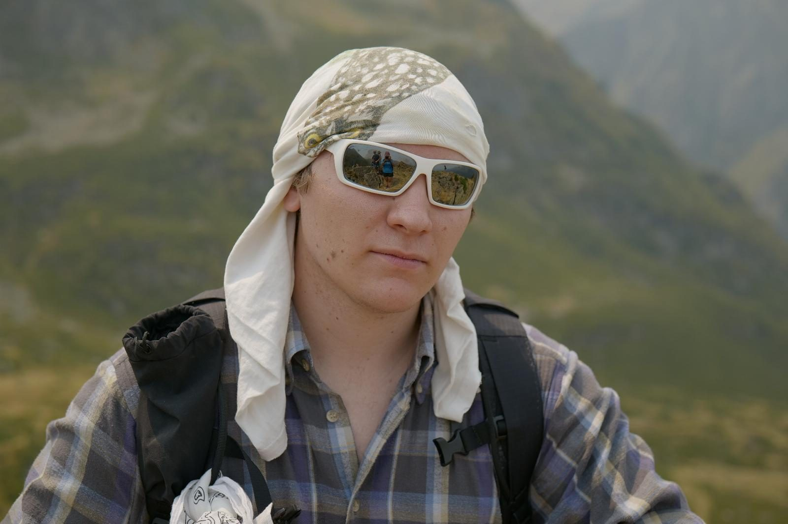
J'ai grandi entre le littoral méditerranéen et les Pyrénées, et je me suis attaché très tôt aux milieux naturels. Depuis l'enfance, je participe aux suivis d'oiseaux de la LPO. J'ai aussi pris part à une mission de suivi de gorilles en République du Congo et travaillé plusieurs étés dans les champs.
Après trois ans de classes préparatoires scientifiques (PCSI/PC) au lycée Joffre de Montpellier, je suis entré à l'ENSEEIHT en 2025. En dehors des cours, je pratique la photographie animalière, la randonnée et la batterie, et je débute l'alpinisme.
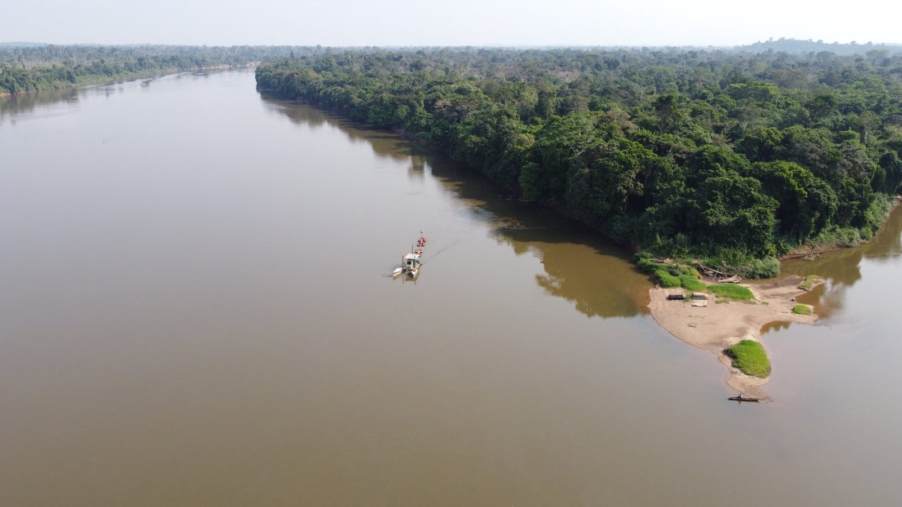
ENSEEIHT · Toulouse INP · depuis 2025
Après les classes préparatoires, le département MF2E me forme à la mécanique des fluides, à la thermodynamique, à la mécanique des milieux continus et à l'ingénierie de l'environnement, avec les mathématiques qui vont avec. J'y suis aussi des cours d'anglais, d'espagnol et de management.
Écoulements potentiels, à bas nombre de Reynolds, diphasiques, turbulents et couches limites. Hydraulique à surface libre et bilans intégraux appliqués aux réseaux et aux rivières.
Logiciels de simulation en mécanique des fluides. Discrétisation des équations aux dérivées partielles (volumes finis, différences finies). Modélisation stochastique, statistiques et optimisation.
Transferts de chaleur et de masse, écoulements en milieu poreux. Écohydraulique, érosion et transport sédimentaire. Analyse d'impacts climatiques à travers des projets.
Calcul de structures, élasticité linéaire et ondes. Traitement du signal et automatique. Instrumentation et bancs d'essai en laboratoire.
Comprendre le phénomène El Niño et le reproduire par une expérience de laboratoire, pour mettre en évidence les mécanismes physiques qui couplent l'océan et l'atmosphère.
Conception et test d'une petite cuve de stockage thermique remplie de matériaux à changement de phase, pour évaluer si ce type de stockage peut fonctionner en conditions réelles.
Projet de recherche sur une solution de protection contre les ultraviolets, dans le cadre de mon second TIPE.
Projet personnel et professionnel (PPP)
Mon projet professionnel, construit selon une démarche de design thinking : trois trajectoires possibles, explorées grâce à des entretiens avec des professionnels, puis confrontées à mes cours, à mes stages et à ce qui compte pour moi.
Produire une électricité propre et renouvelable en préservant l'environnement, par exemple sur des projets d'électrification de zones isolées.
Poursuivre vers la recherche sur le climat, les cours d'eau et l'océan, éventuellement par le master SOAC à Toulouse, puis une thèse.
Enseigner au lycée ou en classes préparatoires après le CAPES ou l'agrégation, ou à l'université après une thèse, éventuellement après une première carrière d'ingénieur.
L'ingénierie industrielle et aérospatiale. Mon entretien avec Philippe Chéoux-Damas, ingénieur chez Airbus spatial, m'a fait découvrir l'aspect industriel du métier d'ingénieur, mais ce n'est pas ce qui m'intéresse vraiment.
Qui je suis aujourd'hui, les expériences qui m'ont construit et l'ingénieur que je veux devenir. Vidéo en anglais.
Structure : présent · passé · futur
Une carrière entre électrification rurale, solaire et éolien, en Afrique et dans l'océan Indien. Il m'a conforté dans mon plan A : les compétences techniques ouvrent la porte, mais la réussite d'un projet tient à l'adaptation au terrain et à son modèle économique.
Ingénieur chez Airbus spatial, il a notamment travaillé sur les projets CO3D et Astrium. Grâce à lui, j'ai pu découvrir l'aspect plus industriel du métier d'ingénieur qu'il m'a décrit, mais ce n'est pas ce qui m'intéresse vraiment : c'est la piste que j'ai écartée.
Après des débuts d'ingénieur, notamment au CNES, et une thèse commencée, il s'est tourné vers l'enseignement des mathématiques au collège. Ce qui l'a motivé : le rapport aux autres, la transmission des connaissances et des stimulations intellectuelles toujours nouvelles grâce aux élèves.
| Document | Langue | État |
|---|---|---|
| CV | Français | Disponible |
| CV | Anglais | Disponible |
| Offre d'emploi (IED, ingénieur hydroélectricité) et lettre de motivation | Français | Disponible |
| Comptes rendus d'entretiens (3) | Français | Disponible |
| Vidéo pitch (présent, passé, futur) | Anglais | Disponible |
| Analyse du secteur (électricité renouvelable) | Français | Disponible |
| Support de soutenance du PPP | Français | Disponible |
| Profil LinkedIn | Français | Disponible |
| Feuille de route de mobilité et bilan carbone | Français | Voir International Mobility |
Entreprise d'électrification rurale qui exploite un mini-réseau alimenté par deux petites centrales hydroélectriques (1 600 kW et 700 kW). Plus de 300 km de lignes moyenne et basse tension y sont en cours de réhabilitation.
Récolte et entretien de cultures. Un travail physique en extérieur qui m'a montré concrètement comment est produite notre alimentation.
Observation de gorilles des plaines de l'Ouest en forêt tropicale secondaire et collecte de données sur la biodiversité, dans des conditions exigeantes.
Découverte du métier d'ingénieur écologue dans un bureau d'études environnementales.
Soins et nourrissage d'animaux sauvages blessés : fous de Bassan, hérissons, corvidés, pigeons.
De longues journées répétitives dans les champs, qui m'ont appris la persévérance et le travail d'équipe.
Exigence ENSEEIHT · 17 semaines à l'étranger · 6 t CO₂e maximum
Les voyages ont nourri ma curiosité pour d'autres cultures bien avant l'école d'ingénieur. À l'ENSEEIHT, je privilégie un seul séjour long et utile plutôt que plusieurs voyages courts, pour limiter mon empreinte carbone.
Une seule destination, pour limiter l'empreinte carbone : une ferme d'élevage de rennes en Laponie, ou un projet de protection d'espèces menacées dans l'Himalaya ou en forêt tropicale.
Électrification rurale par petite hydroélectricité autour du lac Alaotra. Compétences visées : travail en équipe internationale, adaptation au terrain, pratique professionnelle du français et de l'anglais.
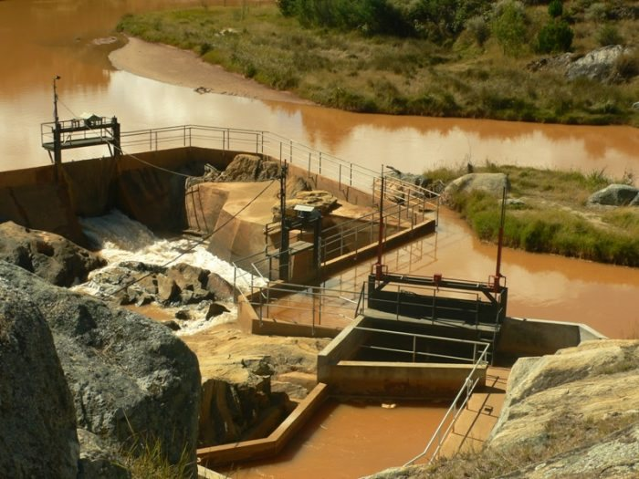
Cours d'anglais (B2) et d'espagnol, préparation du stage.
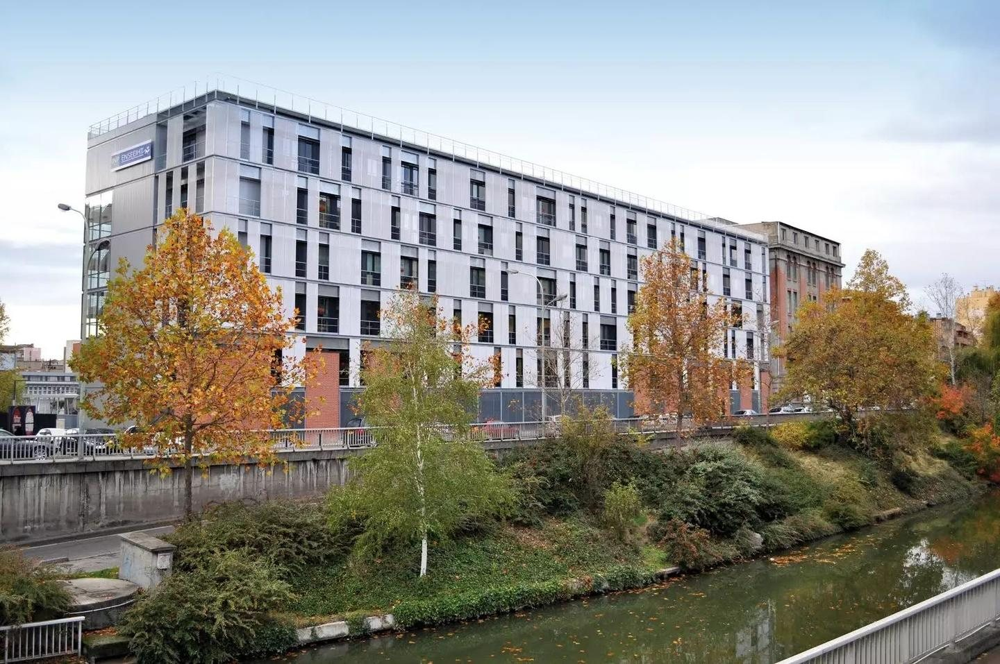
Mission de terrain bénévole avec Endangered Species International, dans la région de Kakamoéka.
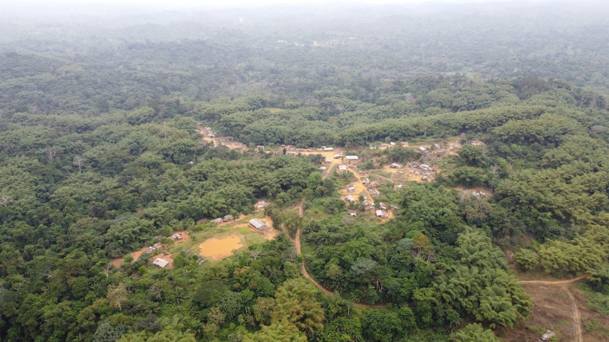
Famille d'accueil et lycée local : une immersion qui a nettement amélioré mon anglais.
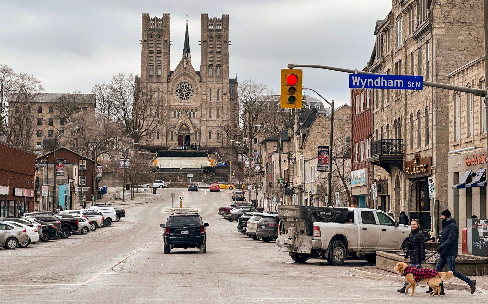
Un pays très accueillant, visité avant le coup d'État de 2021.
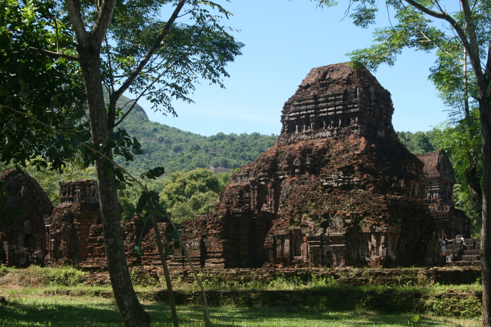
Ma première découverte d'une culture et d'un mode de vie très différents des miens.
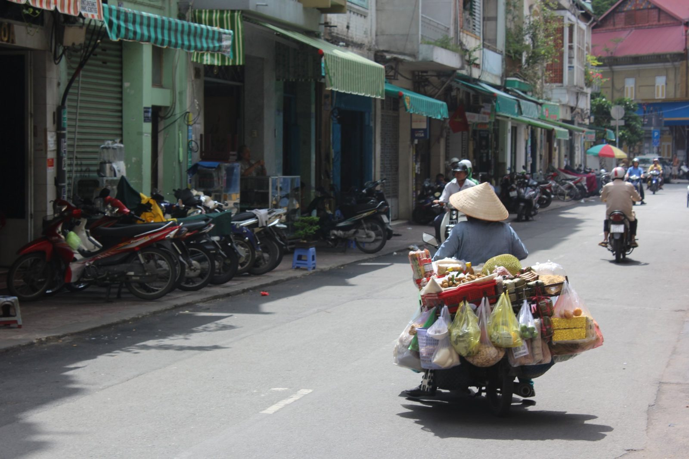
Famille d'accueil et école locale. J'étais jeune et l'adaptation a parfois été difficile, mais l'expérience m'a beaucoup apporté.
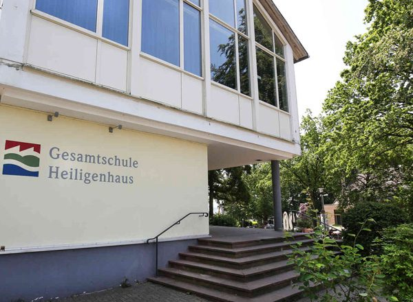
Sous le plafond de 6 t fixé par l'ENSEEIHT, en faisant les trajets Toulouse–Paris en train. En avion, ces trajets ajouteraient environ 0,3 t.
Méthode : ADEME Base Empreinte via Nos Gestes Climat · calculateur de l'ADEME
Exigence ENSEEIHT · 40 heures d'engagement citoyen
Mes engagements portent surtout sur la protection de la nature et de la faune sauvage, avec aussi une action humanitaire menée en famille.
Comptages participatifs d'espèces protégées : suivi d'une population locale de pies-grièches pendant quatre ans, dont les données ont servi au Muséum national d'histoire naturelle, et trois ans de comptage de l'outarde canepetière près de l'aéroport de Béziers.
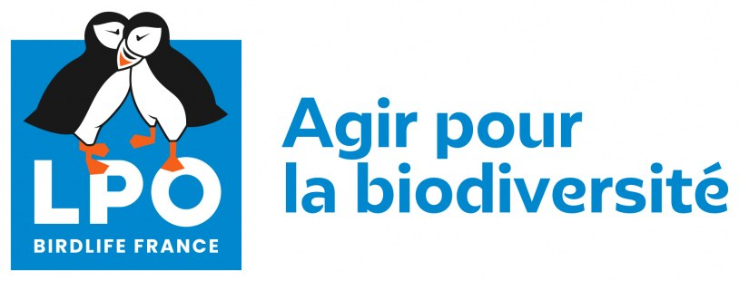
Étude d'un groupe de gorilles des plaines de l'Ouest dans la forêt secondaire de Kakamoéka : cartographie de leur habitat pour limiter les conflits avec les habitants, observation de leur comportement et de leur régime alimentaire, afin de mieux protéger leur milieu.
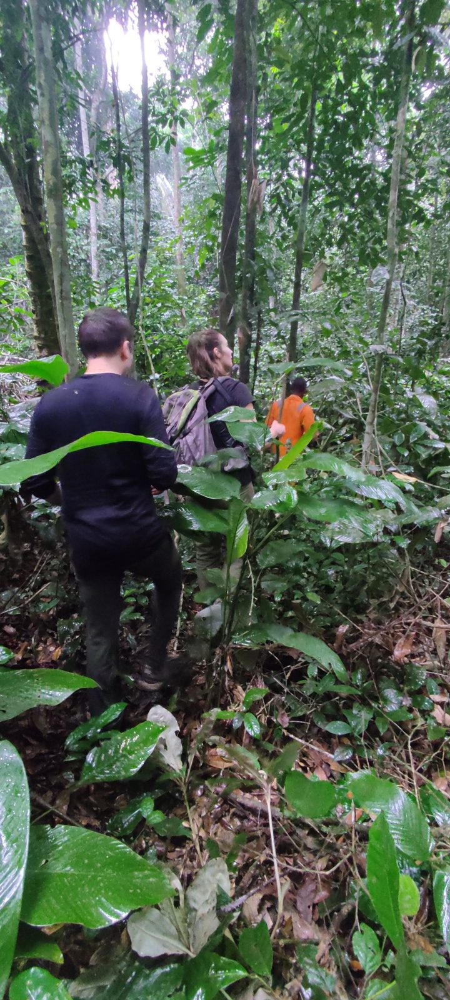
Avec ma famille, nous avons collecté, trié et envoyé des vêtements à des orphelinats que mon père visite lors de ses missions en Afrique. Je l'ai accompagné lors de certains de ces voyages.
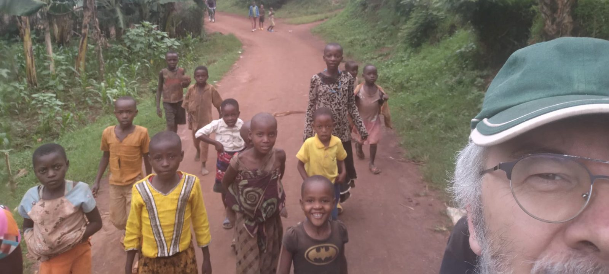
Compétences développées : rigueur dans la collecte de données · patience sur le terrain · travail avec des bénévoles et des scientifiques · adaptation à d'autres cultures
En dehors des cours
Mes activités en disent beaucoup sur moi : la plupart se pratiquent dehors.
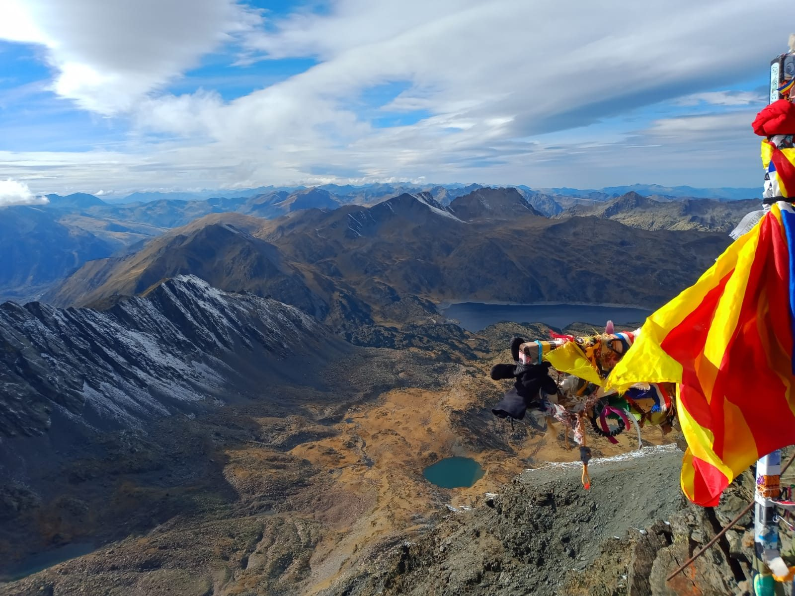
Ski et ski de randonnée l'hiver, randonnée l'été, et je débute l'alpinisme avec un ami. Ce goût me vient de ma grand-mère, qui vit dans les Pyrénées et m'a emmené en montagne dès l'enfance.
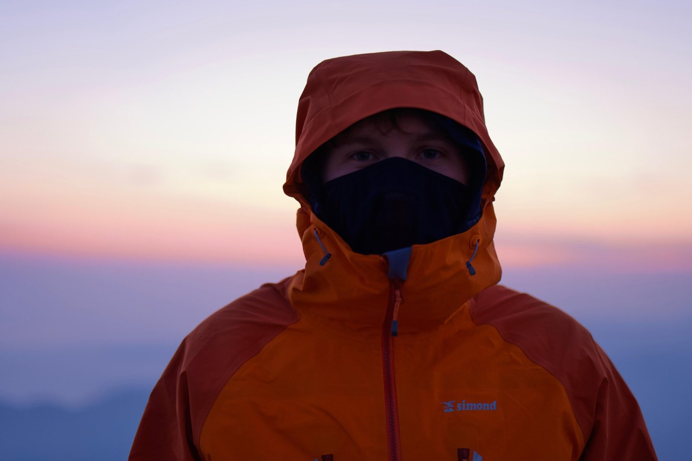
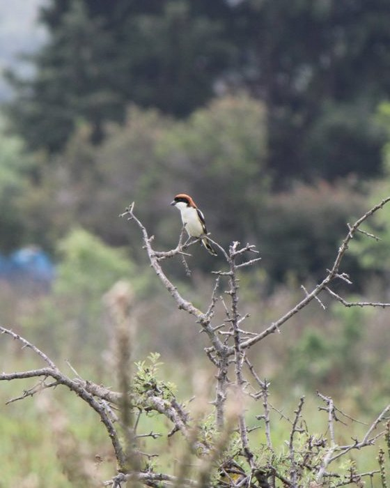
Les oiseaux me fascinent depuis l'enfance. J'ai commencé avec l'appareil de mon père, je me suis acheté le mien à 18 ans et je n'ai plus arrêté. Voir mes photos.
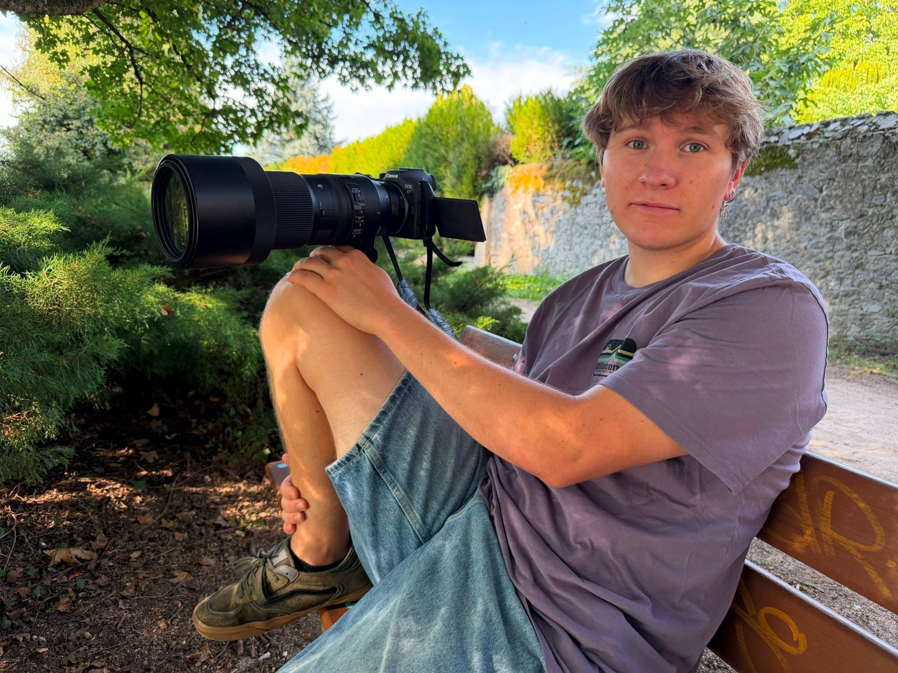
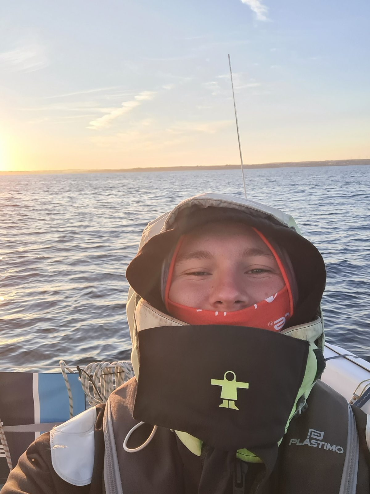
J'ai longtemps fait de l'équitation et j'ai appris la voile enfant. Je ne les pratique plus en ce moment, mais elles m'ont donné le goût du plein air.
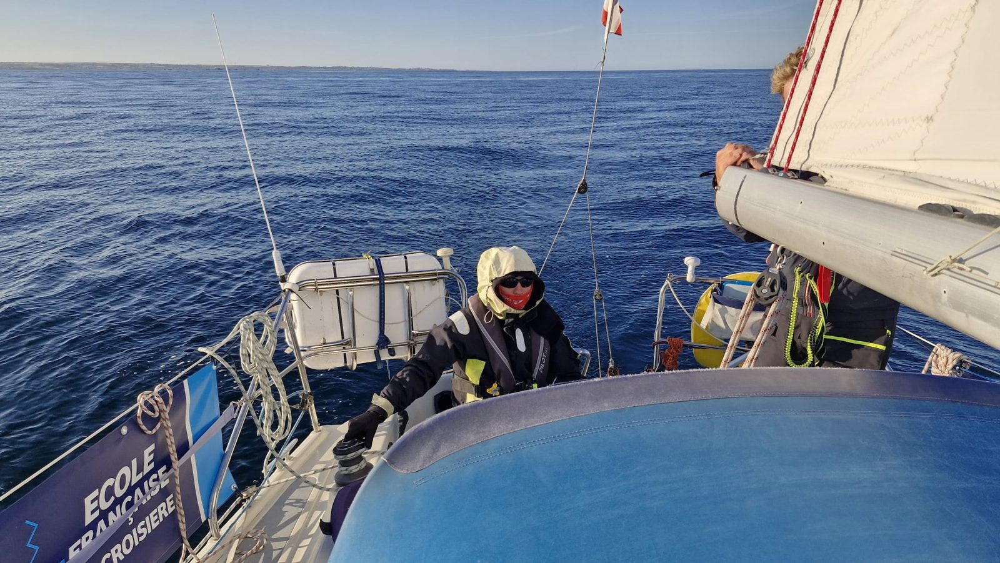
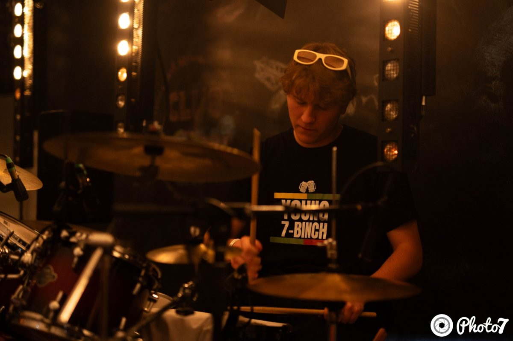
Je joue de la batterie depuis mes 7 ans, et je joue notamment dans un groupe du club de musique de l'ENSEEIHT.
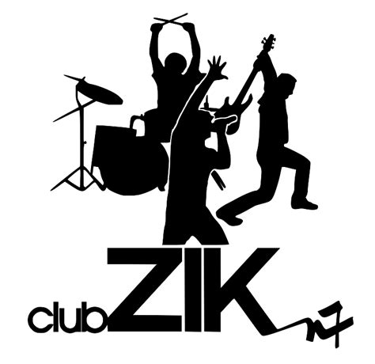
Photographie animalière et de voyage
Une sélection de mes photographies animalières, surtout des oiseaux, prises en France et lors de mes voyages.